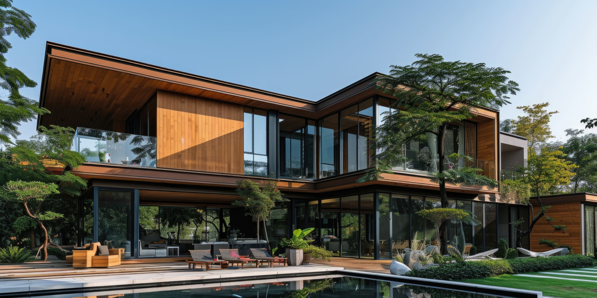
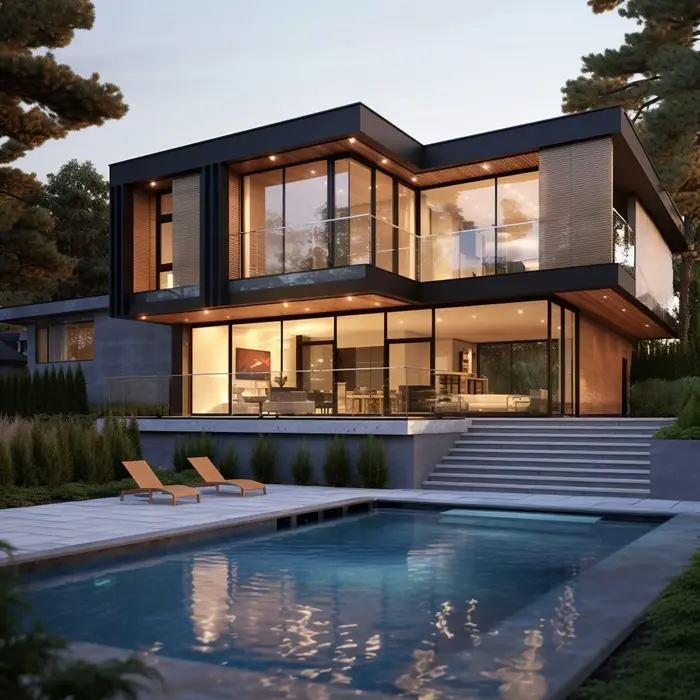

Arquitetura para viver melhor.
Casas desenhadas para acolher a rotina, aproveitar a luz natural e permanecer bonitas com o passar do tempo.
Conversar sobre um projetoUma casa, muitos jeitos de pertencer.
Este espaço apresenta um projeto-conceito para mostrar como uma landing page pode conduzir da primeira impressão à conversa: imagem, ideia e próximo passo em uma mesma leitura.

O desenho começa pela escuta.
Cada projeto parte do terreno, da luz e dos hábitos de quem vai morar ali. A partir desses elementos, volumes e materiais encontram uma forma própria.
Este texto e a marca Casa Nativa são fictícios e servem para demonstrar a estrutura de uma página de apresentação.